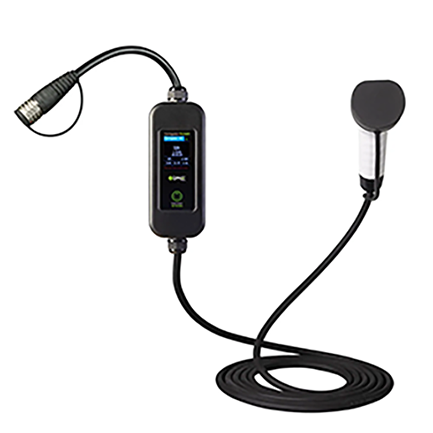

Produtos
O carrinho de mão elétrico é uma solução moderna e eficiente para facilitar o transporte de cargas em diversos setores, como construção civil, agricultura e jardinagem. Equipado com um motor elétrico, ele reduz significativamente o esforço físico do operador, tornando o trabalho mais ágil e produtivo.
Pricipais beneficios
Menos esforço físico: Elimina a necessidade de empurrar manualmente cargas pesadas.
Maior eficiência: Permite transportar materiais com mais rapidez e segurança.
Sustentabilidade: Funciona com bateria recarregável, reduzindo a emissão de poluentes.
Versatilidade: Pode ser usado para carregar areia, cimento, tijolos, adubo, entre outros.
Veiculos


O carrinho de mão elétrico é um investimento inteligente para quem busca aumentar a produtividade e minimizar o desgaste físico no trabalho diário. Com sua tecnologia inovadora, ele se torna um aliado indispensável para profissionais e empresas que lidam com transporte de materiais pesados.
Tipo De Conexões

üéÆ Controle Remoto ‚Äì Permite movimentar o carrinho sem precisar empurrá-lo manualmente, ideal para otimizar o transporte em locais de dif√≠cil acesso.

üîã Baterias são recarregadas com energia solar pelas as placas solares que fornece mais energia sustentaveis, que podem ser recarregadas por um carregador em dias nublados. A bateria possui 12 horas de dura√ß√£o.
⚙️ Modos de Operação – Pode ser usado no modo manual, assistido ou totalmente remoto, adaptando-se às necessidades do usuário.
Essa tecnologia torna o carrinho elétrico ainda mais versátil e eficiente, sendo perfeito para construção civil, agricultura, jardinagem e logística. Com ele, transportar materiais nunca foi tão fácil!